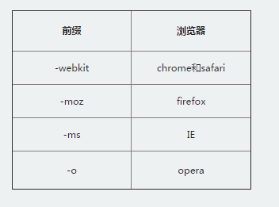

什么是CSS3？CSS3是CSS2的升级版本，3只是版本号，它在CSS2.1的基础上增加了很多强大的新功能。 目前主流浏览器chrome、safari、firefox、opera、甚至360都已经支持了CSS3大部分功能了，IE10以后也开始全面支持CSS3了。 在编写CSS3样式时，不同的浏览器可能需要不同的前缀。它表示该CSS属性或规则尚未成为W3C标准的一部分，是浏览器的私有属性，虽然目前较新版本的浏览器都是不需要前缀的，但为了更好的向前兼容前缀还是少不了的。  |
CSS3能做什么？CSS3给我们带来了什么好处呢？简单的说，CSS3把很多以前需要使用图片和脚本来实现的效果、甚至动画效果，只需要短短几行代码就能搞定。比如圆角，图片边框，文字阴影和盒阴影，过渡、动画等。 CSS3简化了前端开发工作人员的设计过程，加快页面载入速度。 CSS3都有哪些强大功能呢？各位小伙伴们先来一睹为快吧！ 选择器
以前我们通常用class、 ID 或 tagname 来选择HTML元素，CSS3的选择器强大的难以置信。它们可以减少在标签中的class和ID的数量更方便的维护样式表、更好的实现结构与表现的分离。
圆角效果
以前做圆角通常使用背景图片，或繁琐的元素拼凑，现在很简单了 border-radius 帮你轻松搞定。
块阴影与文字阴影
可以对任意DIV和文字增加投影效果。
 色彩
CSS3支持更多的颜色和更广泛的颜色定义。新颜色CSS3支持HSL ， CMYK ，HSLA and RGBA。
渐变效果
以前只能用Photoshop做出的图片渐变效果，现在可以用CCS写出来了。IE中的滤镜也可以实现。
 个性化字体
网页上的字体太单一？使用@Font-Face 轻松实现定制字体。
 多背景图
一个元素上添加多层背景图片。
 边框背景图
边框应用背景图片。
变形处理
你可以对HTML元素进行旋转、缩放、倾斜、移动、甚至以前只能用JavaScript实现的强大动画。 多栏布局可以让你不用使用多个div标签就能实现多栏布局。浏览器解释这个属性并生成多栏，让文本实现一个仿报纸的多栏结构。 媒体查询
针对不同屏幕分辨率，应用不同的样式。 等等 …… 很神奇吧！CSS3使代码更简洁、更高效。可以极大的提高工作效率，打造更高级的用户体验。使web应用的界面设计进入一个新的台阶。 |
CSS3边框 圆角效果 border-radius border-radius是向元素添加圆角边框。 使用方法： border-radius:10px; /* 所有角都使用半径为10px的圆角 */ 
border-radius: 5px 4px 3px 2px; /* 四个半径值分别是左上角、右上角、右下角和左下角，顺时针 */ 
不要以为border-radius的值只能用px单位，你还可以用百分比或者em，但兼容性目前还不太好。 实心上半圆： 方法：把高度(height)设为宽度（width）的一半，并且只设置左上角和右上角的半径与元素的高度一致（大于也是可以的）。
div{
height:50px;/*是width的一半*/
width:100px;
background:#9da;
border-radius:50px 50px 0 0;/*半径至少设置为height的值*/
}
实心圆：
方法：把宽度（width）与高度(height)值设置为一致（也就是正方形），并且四个圆角值都设置为它们值的一半。如下代码： div{
height:100px;/*与width设置一致*/
width:100px;
background:#9da;
border-radius:50px;/*四个圆角值都设置为宽度或高度值的一半*/
}
|
CSS3边框 阴影 box-shadow（一）box-shadow是向盒子添加阴影。支持添加一个或者多个。 很简单的一段代码，就实现了投影效果，酷毙了。我们来看下语法：
box-shadow: X轴偏移量 Y轴偏移量 [阴影模糊半径] [阴影扩展半径] [阴影颜色] [投影方式];
参数介绍：

注意：inset 可以写在参数的第一个或最后一个，其它位置是无效的。 为元素设置外阴影： 示例代码： .box_shadow{ box-shadow:4px 2px 6px #333333; }
效果：

为元素设置内阴影： 示例代码： .box_shadow{ box-shadow:4px 2px 6px #333333 inset; }
效果：

添加多个阴影： 以上的语法的介绍，就这么简单，如果添加多个阴影，只需用逗号隔开即可。如：
.box_shadow{
box-shadow:4px 2px 6px #f00, -4px -2px 6px #000, 0px 0px 12px 5px #33CC00 inset;
}
效果：
|
CSS3边框 阴影 box-shadow（二）1、阴影模糊半径与阴影扩展半径的区别 阴影模糊半径：此参数可选，其值只能是为正值，如果其值为0时，表示阴影不具有模糊效果，其值越大阴影的边缘就越模糊； 阴影扩展半径：此参数可选，其值可以是正负值，如果值为正，则整个阴影都延展扩大，反之值为负值时，则缩小； 2、X轴偏移量和Y轴偏移量值可以设置为负数
box-shadow: X轴偏移量 Y轴偏移量 [阴影模糊半径] [阴影扩展半径] [阴影颜色] [投影方式];
X轴偏移量为负数：
.boxshadow-outset{
width:100px;
height:100px;
box-shadow:-4px 4px 6px #666;
}
效果图： 
Y轴偏移量为负数：
.boxshadow-outset{
width:100px;
height:100px;
box-shadow:4px -4px 6px #666;
}
效果图： |
CSS3边框 为边框应用图片 border-image顾名思义就是为边框应用背景图片，它和我们常用的background属性比较相似。例如：
background:url(xx.jpg) 10px 20px no-repeat;
但是又比背景图片复杂一些。
想象一下：一个矩形，有四个边框。如果应用了边框图片，图片该怎么分布呢？ 图片会自动被切割分成四等分。用于四个边框。
可以理解为它是一个切片工具，会自动把用做边框的图片切割。怎么切割呢？为了方便理解，做了一张特殊的图片，由9个矩形（70*70像素）拼成的一张图（210*210像素），并标注好序号，是不是像传说中的九宫图，如下：
 我们把上图当作边框图片 来应用一下， 看一看是什么效果 根据border-image的语法： 
#border-image{
background:#F4FFFA;
width:210px; height:210px; border:70px solid #ddd;
border-image:url(borderimg.png) 70 repeat
}
效果： 
从序号可以看出div的四个角分别对应了背景图片的四个角。而2,4,6,8 被重复。5在哪？因为是从四周向中心切割图片的所以，5显示不出来。而在chrome浏览器中5是存在的，下图的样子：
 repeat的意思就是重复，目前因为是刚好被整除，效果看不出来。如果改下DIV的宽高，再来看重复的效果：
repeat的意思就是重复，目前因为是刚好被整除，效果看不出来。如果改下DIV的宽高，再来看重复的效果：
 边角部分为裁掉了，可见repeat就是一直重复，然后超出部分剪裁掉，而且是居中开始重复。 Round 参数：Round可以理解为圆满的铺满。为了实现圆满所以会压缩（或拉伸）；
#border-image {
width:170px;
height:170px;
border:70px solid;
border-image:url(borderimg.png) 70 round;
}
效果： 
可见图片被压扁了。 Stretch 很好理解就是拉伸，有多长拉多长。有多远“滚”多远。
border-image:url(borderimg.png) 70 stretch
看一下效果： 
2,4,6,8分别被拉伸显示。 注意：Chrome下，中间部分也会被拉伸，webkit浏览器对于round属性和repeat属性似乎没有区分，显示效果是一样的。 |
CSS3颜色 颜色之RGBARGB是一种色彩标准，是由红(R)、绿(G)、蓝(B)的变化以及相互叠加来得到各式各样的颜色。RGBA是在RGB的基础上增加了控制alpha透明度的参数。 语法：
color：rgba(R,G,B,A)
以上R、G、B三个参数，正整数值的取值范围为：0 - 255。百分数值的取值范围为：0.0% - 100.0%。超出范围的数值将被截至其最接近的取值极限。并非所有浏览器都支持使用百分数值。A为透明度参数，取值在0~1之间，不可为负值。 代码示例： background-color:rgba(100,120,60,0.5);
|
CSS3颜色 渐变色彩 CSS3 Gradient 分为线性渐变(linear)和径向渐变(radial)。由于不同的渲染引擎实现渐变的语法不同，这里我们只针对线性渐变的 W3C 标准语法来分析其用法，其余大家可以查阅相关资料。W3C 语法已经得到了 IE10+、Firefox19.0+、Chrome26.0+ 和 Opera12.1+等浏览器的支持。 这一小节我们来说一下线性渐变： 
参数： 第一个参数:指定渐变方向，可以用“角度”的关键词或“英文”来表示： 
（单击图片可放大） 第一个参数省略时，默认为“180deg”，等同于“to bottom”。 第二个和第三个参数，表示颜色的起始点和结束点，可以有多个颜色值。
background-image:linear-gradient(to left, red, orange,yellow,green,blue,indigo,violet);
效果图： |
CSS3文字与字体 text-overflow 与 word-wraptext-overflow用来设置是否使用一个省略标记（...）标示对象内文本的溢出。 语法： 
但是text-overflow只是用来说明文字溢出时用什么方式显示，要实现溢出时产生省略号的效果，还须定义强制文本在一行内显示（white-space:nowrap）及溢出内容为隐藏（overflow:hidden），只有这样才能实现溢出文本显示省略号的效果，代码如下： text-overflow:ellipsis;
overflow:hidden;
white-space:nowrap; 同时，word-wrap也可以用来设置文本行为，当前行超过指定容器的边界时是否断开转行。 语法： 
normal为浏览器默认值，break-word设置在长单词或 URL地址内部进行换行，此属性不常用，用浏览器默认值即可。 |
CSS3文字与字体 嵌入字体@font-face@font-face能够加载服务器端的字体文件，让浏览器端可以显示用户电脑里没有安装的字体。 语法：
@font-face {
font-family : 字体名称;
src : 字体文件在服务器上的相对或绝对路径;
}
这样设置之后，就可以像使用普通字体一样在（font-*）中设置字体样式。 比如： p {
font-size :12px;
font-family : "My Font";
/*必须项，设置@font-face中font-family同样的值*/
}
|
CSS3文字与字体 文本阴影text-shadowtext-shadow可以用来设置文本的阴影效果。 语法：
text-shadow: X-Offset Y-Offset blur color;
X-Offset：表示阴影的水平偏移距离，其值为正值时阴影向右偏移，反之向左偏移； Y-Offset：是指阴影的垂直偏移距离，如果其值是正值时，阴影向下偏移，反之向上偏移； Blur：是指阴影的模糊程度，其值不能是负值，如果值越大，阴影越模糊，反之阴影越清晰，如果不需要阴影模糊可以将Blur值设置为0； Color：是指阴影的颜色，其可以使用rgba色。 比如，我们可以用下面代码实现设置阴影效果。 text-shadow: 0 1px 1px #fff
|
CSS3背景 background-origin设置元素背景图片的原始起始位置。 语法：
background-origin ： border-box | padding-box | content-box;
参数分别表示背景图片是从边框，还是内边距（默认值），或者是内容区域开始显示。 效果如下： 
需要注意的是，如果背景不是no-repeat，这个属性无效，它会从边框开始显示。 |
CSS3背景 background-clip用来将背景图片做适当的裁剪以适应实际需要。 语法：
background-clip ： border-box | padding-box | content-box | no-clip
参数分别表示从边框、或内填充，或者内容区域向外裁剪背景。no-clip表示不裁切，和参数border-box显示同样的效果。backgroud-clip默认值为border-box。 效果如下图所示： |
CSS3背景 background-size设置背景图片的大小，以长度值或百分比显示，还可以通过cover和contain来对图片进行伸缩。 语法：
background-size: auto | <长度值> | <百分比> | cover | contain
取值说明： 1、auto：默认值，不改变背景图片的原始高度和宽度； 2、<长度值>：成对出现如200px 50px，将背景图片宽高依次设置为前面两个值，当设置一个值时，将其作为图片宽度值来等比缩放； 3、<百分比>：0％~100％之间的任何值，将背景图片宽高依次设置为所在元素宽高乘以前面百分比得出的数值，当设置一个值时同上； 4、cover：顾名思义为覆盖，即将背景图片等比缩放以填满整个容器； 5、contain：容纳，即将背景图片等比缩放至某一边紧贴容器边缘为止。 |
CSS3背景 multiple backgrounds多重背景，也就是CSS2里background的属性外加origin、clip和size组成的新background的多次叠加，缩写时为用逗号隔开的每组值；用分解写法时，如果有多个背景图片，而其他属性只有一个（例如background-repeat只有一个），表明所有背景图片应用该属性值。 语法缩写如下：
background ： [background-color] | [background-image] | [background-position][/background-size] | [background-repeat] | [background-attachment] | [background-clip] | [background-origin],...
可以把上面的缩写拆解成以下形式： background-image:url1,url2,...,urlN;
background-repeat : repeat1,repeat2,...,repeatN;
backround-position : position1,position2,...,positionN;
background-size : size1,size2,...,sizeN;
background-attachment : attachment1,attachment2,...,attachmentN;
background-clip : clip1,clip2,...,clipN;
background-origin : origin1,origin2,...,originN;
background-color : color;
注意： - 用逗号隔开每组 background 的缩写值；
- 如果有 size 值，需要紧跟 position 并且用 "/" 隔开；
- 如果有多个背景图片，而其他属性只有一个（例如 background-repeat 只有一个），表明所有背景图片应用该属性值。
- background-color 只能设置一个。
举例： 有三张单独的图片： 


使用多背景技术实现： |


{kind=link}